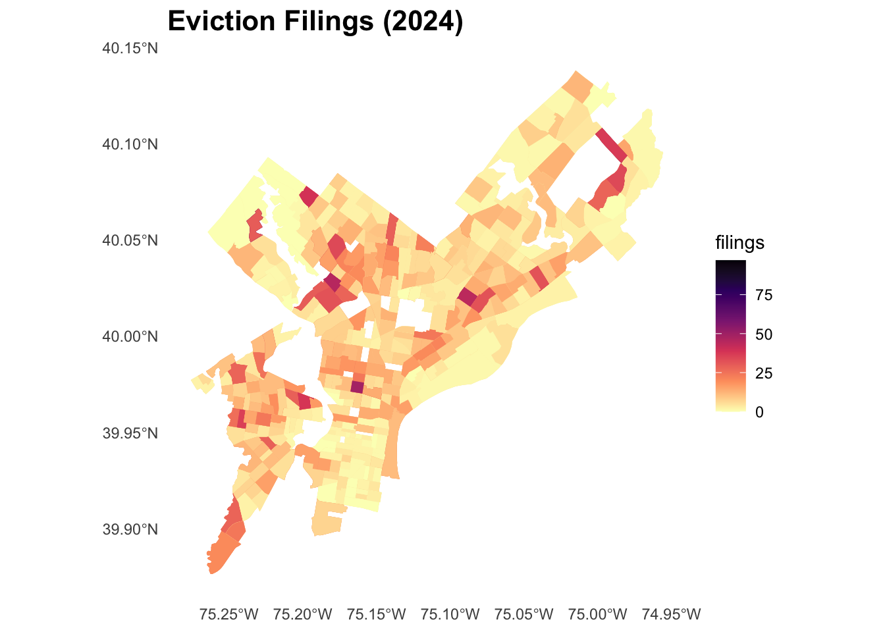
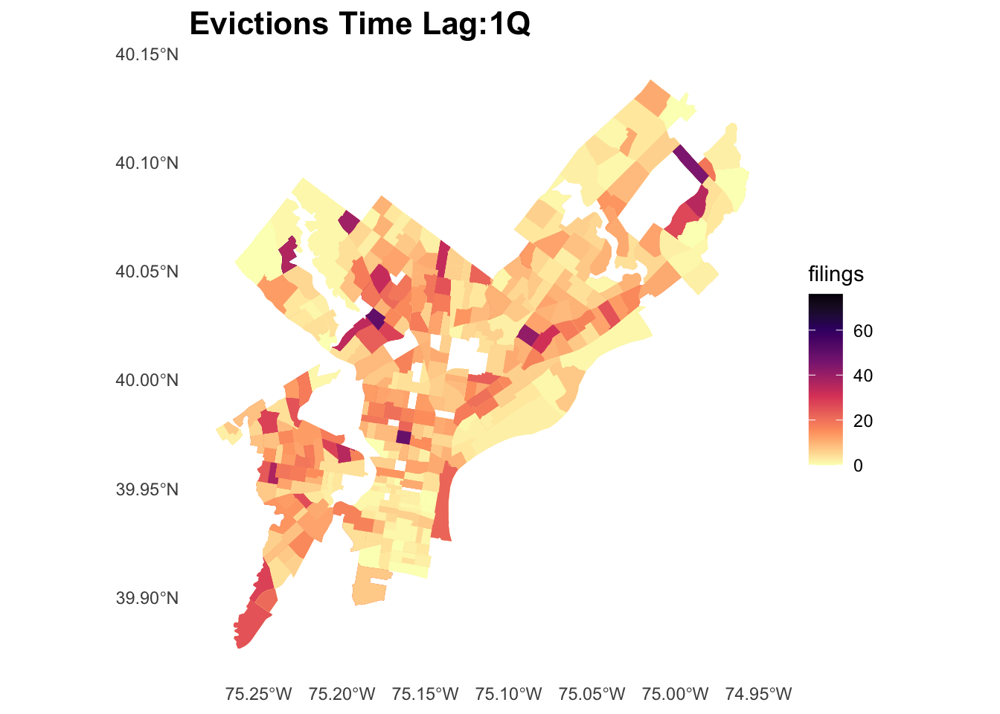
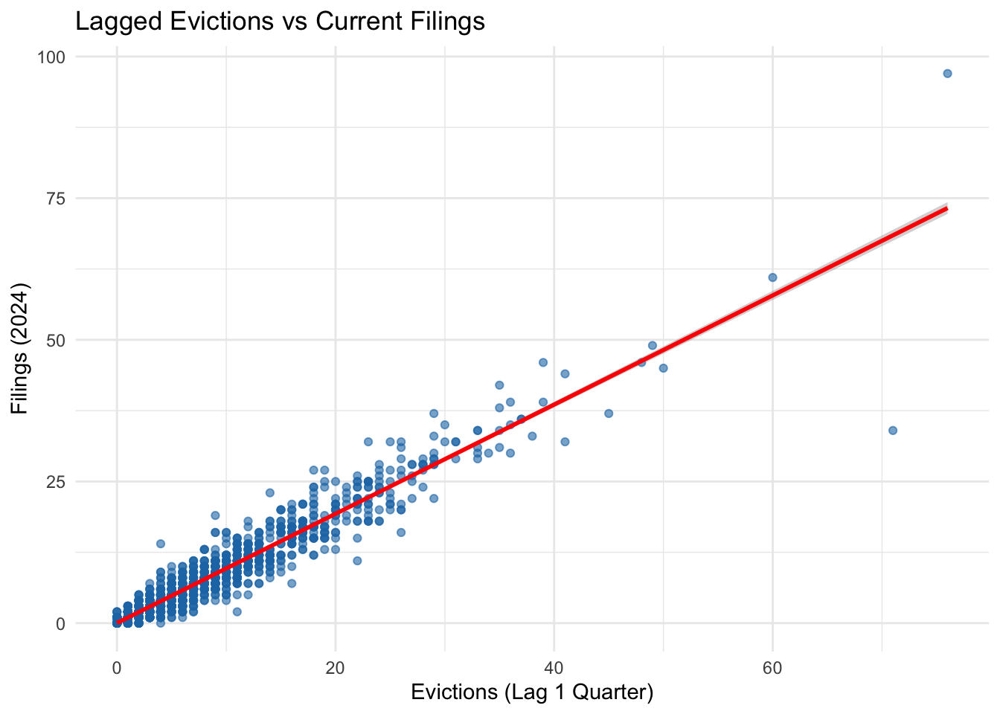
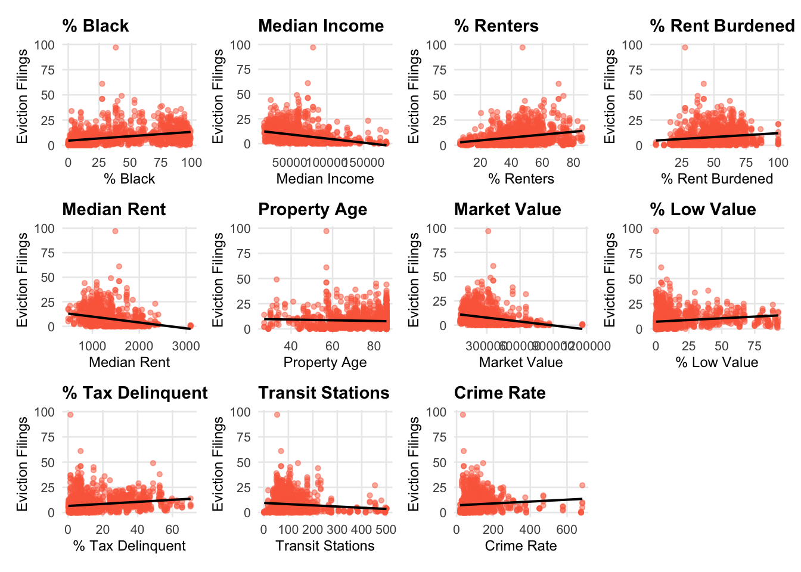
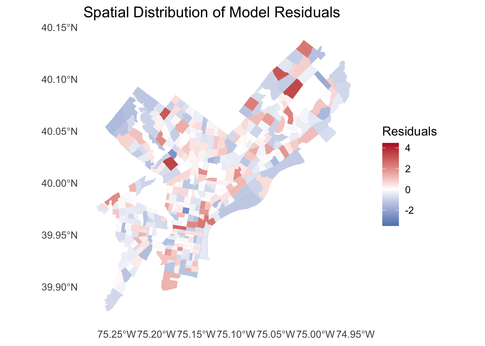
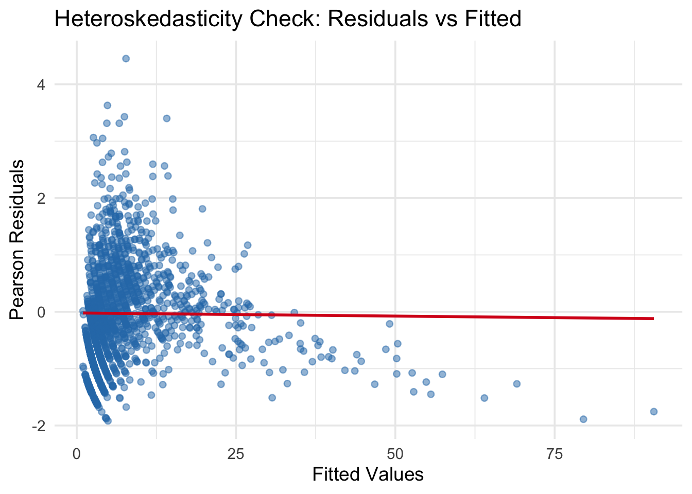

Evictions represent a critical indicator of neighborhood instability and social vulnerability.
In this project, our dependent variable is Quarterly eviction total for 2024, aggregated at the census tract level in Philadelphia.
Our core research question is: Can we predict quarterly eviction filing counts at the census-tract level 1–3 months (i.e., 1 quarter) in advance, enabling the City of Philadelphia to proactively deploy rental assistance, legal aid resources, and community outreach?Including basic concepts as follows:
Spatial Unit: Census tract
Temporal Unit: Quarterly
Outcome: Number of eviction filings per tract per quarter
Monthly eviction filings are often noisy and volatile. Aggregating to quarters (3-month periods) smooths short-term fluctuations and better aligns with: Budget cycles, Program planning cycles, Policy reporting (quarterly dashboards)
We therefore build a tract–quarter modeling dataset, while still allowing lag structures that represent 1, 2, 4 quarters in the past.
We incorporate three major categories of predictors:
Structural characteristics from ACS and property assessment data
Spatial environmental features such as crime and transit accessibility
Temporal dynamics, Lag 1 quarter (previous quarter’s evictions)
Our goal is to build and compare multiple statistical and spatial models to determine which approach most accurately predicts tract-level eviction activity.
Data Preparation and Cleaning
This section describes the construction of the final analysis dataset, integrating multiple sources.
library(tidycensus)library(sf)
Linking to GEOS 3.13.0, GDAL 3.8.5, PROJ 9.5.1; sf_use_s2() is TRUE
library(dplyr)
Attaching package: 'dplyr'
The following objects are masked from 'package:stats':
filter, lag
The following objects are masked from 'package:base':
intersect, setdiff, setequal, union
library(readr)library(zoo)
Attaching package: 'zoo'
The following objects are masked from 'package:base':
as.Date, as.Date.numeric
library(lubridate)
Attaching package: 'lubridate'
The following objects are masked from 'package:base':
date, intersect, setdiff, union
── Conflicts ────────────────────────────────────────── tidyverse_conflicts() ──
✖ dplyr::filter() masks stats::filter()
✖ dplyr::lag() masks stats::lag()
ℹ Use the conflicted package (<http://conflicted.r-lib.org/>) to force all conflicts to become errors
options(scipen=999)
Census Tracks
philly_tracts <-get_acs(geography ="tract",state ="PA",county ="Philadelphia",variables ="B01001_001", # total population, used just to get geometryyear =2022,geometry =TRUE)
Getting data from the 2018-2022 5-year ACS
Downloading feature geometry from the Census website. To cache shapefiles for use in future sessions, set `options(tigris_use_cache = TRUE)`.
Eviction filing data from 2021–2024 were collected and aggregated to the tract–quarter level. (We use 2023 & 2024 evictions to make dependent variables and lags). Quarterly lags were computed to represent short-term momentum (lag 1).
Spatial features representing public safety and accessibility include: - Crime activity aggregated via spatial joins to census tracts
- Transit accessibility, measured through density of stations within walking distance
These variables quantify environmental exposure that may influence eviction risk.
tract_centroids <-st_centroid(philly_tracts)
Warning: st_centroid assumes attributes are constant over geometries
transit_raw <-read_csv("data/Transit_Stops.csv")
Rows: 22478 Columns: 11
── Column specification ────────────────────────────────────────────────────────
Delimiter: ","
chr (4): LineAbbr, Direction, StopAbbr, StopName
dbl (7): X, Y, FID, Sequence, StopId, Lon, Lat
ℹ Use `spec()` to retrieve the full column specification for this data.
ℹ Specify the column types or set `show_col_types = FALSE` to quiet this message.
Rows: 160388 Columns: 18
── Column specification ────────────────────────────────────────────────────────
Delimiter: ","
chr (6): the_geom, the_geom_webmercator, dc_dist, psa, location_block, text...
dbl (9): cartodb_id, objectid, hour, dc_key, ucr_general, point_x, point_y,...
dttm (1): dispatch_date_time
date (1): dispatch_date
time (1): dispatch_time
ℹ Use `spec()` to retrieve the full column specification for this data.
ℹ Specify the column types or set `show_col_types = FALSE` to quiet this message.
Two temporal lag measures were added (We use Lag1 for following models): - Lag 1 (t–1 quarter): captures short-term persistence
- Lag 2 (t–4 quarters): captures seasonal effects across years
evictions_with_lags <- evictions_quarterly %>%arrange(GEOID, year, quarter) %>%group_by(GEOID) %>%mutate(evictions_lag1Q =lag(eviction_filings, 1), # 1 quarter ago (~3 months)evictions_lag2Q =lag(eviction_filings, 2), # 2 quarters (~6 months)evictions_lag4Q =lag(eviction_filings, 4), # 4 quarters (~12 months)# Rolling means in quarters (e.g., average over last 2 or 4 quarters)evictions_avg_2Q =rollmean(eviction_filings, k =2, fill =NA, align ="right"),evictions_avg_4Q =rollmean(eviction_filings, k =4, fill =NA, align ="right") ) %>%ungroup()head(evictions_with_lags)
# A tibble: 6 × 15
GEOID year_quarter year quarter racial_majority filings_avg
<chr> <chr> <dbl> <int> <chr> <dbl>
1 42101000101 2019-Q4 2019 4 White 0.5
2 42101000101 2020-Q1 2020 1 White 0
3 42101000101 2020-Q1 2020 1 White 0
4 42101000101 2020-Q1 2020 1 White 0
5 42101000101 2020-Q1 2020 1 White 0.5
6 42101000101 2020-Q1 2020 1 White 0.5
# ℹ 9 more variables: filings_avg_prepandemic_baseline <dbl>,
# filings_2020 <int>, eviction_filings <int>, weeks_in_quarter <int>,
# evictions_lag1Q <int>, evictions_lag2Q <int>, evictions_lag4Q <int>,
# evictions_avg_2Q <dbl>, evictions_avg_4Q <dbl>
Warning: There was 1 warning in `summarise()`.
ℹ In argument: `across(all_of(numeric_cols), sum, na.rm = TRUE)`.
ℹ In group 1: `GEOID = "42101000101"` `year_quarter = "2024-Q1"`.
Caused by warning:
! The `...` argument of `across()` is deprecated as of dplyr 1.1.0.
Supply arguments directly to `.fns` through an anonymous function instead.
# Previously
across(a:b, mean, na.rm = TRUE)
# Now
across(a:b, \(x) mean(x, na.rm = TRUE))
Merge All Data
All variables were merged into a unified census-tract-level dataset for 2024 modeling and performance evaluation.
final_panel <- evictions_2024_quarterly %>%# 1. Join ACS structural dataleft_join(acs_final, by ="GEOID") %>%# 2. Join Property structural indicatorsleft_join(property_summary, by ="GEOID") %>%# 3. Join spatial transit accessibilityleft_join(transit_summary, by ="GEOID") %>%# 4. Join crime + crime_rateleft_join(crime_summary, by ="GEOID") %>%# 5. Join geometry (for mapping only)left_join(philly_tracts, by ="GEOID")# Print summarycat("\nMerged dataset created successfully.\n")
# Optional: save final merged tablewrite_csv(st_drop_geometry(final_panel), "data/final_panel_no_geometry.csv")st_write(final_panel, "data/final_panel.geojson", delete_dsn =TRUE)
Warning in clean_columns(as.data.frame(obj), factorsAsCharacter): Dropping
column(s) geometry.y of class(es) sfc_MULTIPOLYGON;sfc
Deleting source `data/final_panel.geojson' using driver `GeoJSON'
Writing layer `final_panel' to data source
`data/final_panel.geojson' using driver `GeoJSON'
Writing 1636 features with 37 fields and geometry type Unknown (any).
Warning in CPL_write_ogr(obj, dsn, layer, driver,
as.character(dataset_options), : GDAL Message 1: NaN of Infinity value found.
Skipped
Exploration
This section presents exploratory data analysis, focusing on spatial patterns and distributional characteristics.
Reading layer `tl_2020_42_tract' from data source
`/Users/cathy/GitHub/portfolio-setup-uxiaoo22/Assignments/Final/ppa_final/copy_github2/data/tl_2020_42_tract/tl_2020_42_tract.shp'
using driver `ESRI Shapefile'
Simple feature collection with 3446 features and 12 fields
Geometry type: MULTIPOLYGON
Dimension: XY
Bounding box: xmin: -80.51985 ymin: 39.7198 xmax: -74.68956 ymax: 42.51607
Geodetic CRS: NAD83
df <-read_csv("data/final_panel_no_geometry.csv")
Rows: 1636 Columns: 39
── Column specification ────────────────────────────────────────────────────────
Delimiter: ","
chr (4): GEOID, year_quarter, geometry.x, geometry.y
dbl (35): year, quarter, filings_avg, filings_avg_prepandemic_baseline, fili...
ℹ Use `spec()` to retrieve the full column specification for this data.
ℹ Specify the column types or set `show_col_types = FALSE` to quiet this message.
df <- df %>%drop_na()df_sf_2 <- philly_tracts_2 %>%right_join(df, by ="GEOID") %>%st_as_sf()
Eviction Data Analysis
Mapping quarterly eviction totals to visualize spatial clustering
Distributional summaries of eviction variations across tracts
Time-series inspection of lag relationships
Exploration of spatial autocorrelation
Dependent Variable vs. Time Lag (Quarterly Evictions)
The dependent variable (evictions in each quarter of 2024) and its lagged version show nearly identical spatial patterns, with concentrations primarily in West and Central Philadelphia. This suggests strong temporal persistence in eviction risk.
ggplot(df_sf_2) +geom_sf(aes(fill = filings_2020), color =NA) +scale_fill_viridis_c(option ="magma", direction =-1) +theme_minimal() +labs(title ="Eviction Filings (2024)",fill ="filings" ) +theme(panel.grid =element_blank(),plot.title =element_text(size =16, face ="bold") )

ggplot(df_sf_2) +geom_sf(aes(fill = evictions_lag1Q), color =NA) +scale_fill_viridis_c(option ="magma", direction =-1) +theme_minimal() +labs(title ="Evictions Time Lag:1Q",fill ="filings" ) +theme(panel.grid =element_blank(),plot.title =element_text(size =16, face ="bold") )

Distributional Assessment of the Dependent Variable
Eviction filings exhibit severe right-skewness.
For OLS models, a log transformation is recommended. For Poisson-type count models, no transformation is required because the GLM framework already accommodates non-negative skewed counts. Given the discrete nature of the outcome, Poisson/NB regression is more appropriate.
df_sf_2 %>%st_drop_geometry() %>%ggplot(aes(x = filings_2020)) +geom_histogram(bins =40, fill ="#8c6bb1", color ="white") +theme_minimal() +labs(title ="Distribution of Eviction Filings",x ="Filings (2024)",y ="Count" )
Linear Relationship Examination
The strongest linear relationship observed is between eviction filings and their time lag, confirming strong short-term temporal dependence. Other predictors show weaker linearity, suggesting that OLS alone may not capture full dynamics.
df_sf_2 %>%st_drop_geometry() %>%ggplot(aes(x = evictions_lag1Q, y = filings_2020)) +geom_point(alpha =0.6, color ="#1f78b4") +geom_smooth(method ="lm", se =TRUE, color ="red") +theme_minimal() +labs(title ="Lagged Evictions vs Current Filings",x ="Evictions (Lag 1 Quarter)",y ="Filings (2024)" )
`geom_smooth()` using formula = 'y ~ x'

Spatial Autocorrelation
Strong global and local spatial autocorrelation is detected. High–high and low–low clusters appear clearly across the city, indicating that spatial structure is an essential component for subsequent modeling.
library(spdep)
Loading required package: spData
To access larger datasets in this package, install the spDataLarge
package with: `install.packages('spDataLarge',
repos='https://nowosad.github.io/drat/', type='source')`
# neighborsnb <-poly2nb(df_sf_2)
Warning in poly2nb(df_sf_2): neighbour object has 3 sub-graphs;
if this sub-graph count seems unexpected, try increasing the snap argument.
Moran I test under randomisation
data: df_sf_2$filings_2020
weights: lw
Moran I statistic standard deviate = 39.583, p-value <
0.00000000000000022
alternative hypothesis: greater
sample estimates:
Moran I statistic Expectation Variance
0.29970364166 -0.00067980965 0.00005758961
Exploration of spatial autocorrelation in predictors
ACS Variables Used
We incorporate the following structural characteristics derived from ACS:
pct_black
median_income
pct_renter
pct_rent_burdened
median_rent
property_age
library(viridis)
Loading required package: viridisLite
library(patchwork)vars_to_plot <-c("pct_black","median_income","pct_renter","pct_rent_burdened","median_rent","property_age")# --- function to generate a map for one variable ---plot_var <-function(var_name) {ggplot(df_sf_2) +geom_sf(aes_string(fill = var_name), color =NA) +scale_fill_viridis_c(option ="plasma") +theme_minimal(base_size =9) +labs(title = var_name,fill =NULL ) +theme(panel.grid =element_blank(),plot.title =element_text(size =10, face ="bold"),legend.title =element_text(size =8),legend.text =element_text(size =7),legend.key.width =unit(0.3, "cm"),legend.key.height =unit(0.3, "cm"),axis.text =element_blank(),axis.ticks =element_blank(),axis.title =element_blank() )}# --- generate all maps ---plot_list <-lapply(vars_to_plot, plot_var)
Warning: `aes_string()` was deprecated in ggplot2 3.0.0.
ℹ Please use tidy evaluation idioms with `aes()`.
ℹ See also `vignette("ggplot2-in-packages")` for more information.
# --- combine into 3x2 grid ---(patchwork::wrap_plots(plot_list, ncol =3))
Property Variables Used
Property characteristics include:
median_market_value
pct_low_value
pct_tax_delinquent
vars_to_plot <-c("median_market_value","pct_low_value","pct_tax_delinquent")# --- function to generate a map for one variable ---plot_var <-function(var_name) {ggplot(df_sf_2) +geom_sf(aes_string(fill = var_name), color =NA) +scale_fill_viridis_c(option ="plasma") +theme_minimal(base_size =9) +labs(title = var_name,fill =NULL ) +theme(panel.grid =element_blank(),plot.title =element_text(size =10, face ="bold"),legend.title =element_text(size =8),legend.text =element_text(size =7),legend.key.width =unit(0.3, "cm"),legend.key.height =unit(0.3, "cm"),axis.text =element_blank(),axis.ticks =element_blank(),axis.title =element_blank() )}# --- generate all maps ---plot_list <-lapply(vars_to_plot, plot_var)# --- combine into 3x1 grid ---patchwork::wrap_plots(plot_list, ncol =3)
Moran’s I Test
All structural and property predictors exhibit strong spatial autocorrelation. This confirms that spatial dependence is inherent across most socioeconomic conditions, reinforcing the need for spatially informed modeling strategies.
# Define the structural variables to testvars_struct <-c("pct_black","median_income","pct_renter","pct_rent_burdened","median_rent","property_age","median_market_value","pct_low_value","pct_tax_delinquent")# Then run your existing Moran's I codemoran_results <-lapply(vars_struct, function(v) { test <-moran.test(df_sf_2[[v]], lw)data.frame(variable = v,moran_I = test$estimate[["Moran I statistic"]],expectation = test$estimate[["Expectation"]],variance = test$estimate[["Variance"]],p_value = test$p.value )})moran_df <-do.call(rbind, moran_results)moran_df
Spatial distribution and diagnostics for crime concentrations and transit accessibility.
Both crime rate and transit accessibility display strong central-city clustering patterns.
These spatial features help contextualize neighborhood-level vulnerabilities and guide expectations for model performance.
Scatterplot examinations show that time lag exhibits the strongest linear association with eviction filings. Most other predictors show weak or nonlinear relationships.
This indicates that linear models alone may overlook important structural and spatial effects—additional modeling strategies (e.g., Poisson, NB, spatial models) are required.
`geom_smooth()` using formula = 'y ~ x'
`geom_smooth()` using formula = 'y ~ x'
`geom_smooth()` using formula = 'y ~ x'
`geom_smooth()` using formula = 'y ~ x'
`geom_smooth()` using formula = 'y ~ x'
`geom_smooth()` using formula = 'y ~ x'
`geom_smooth()` using formula = 'y ~ x'
`geom_smooth()` using formula = 'y ~ x'
`geom_smooth()` using formula = 'y ~ x'
`geom_smooth()` using formula = 'y ~ x'
`geom_smooth()` using formula = 'y ~ x'

Correlation analysis
Correlation tests show that most predictors are only weakly correlated.
However, some ACS variables exhibit moderate correlation (Pearson r = 0.6–0.7), which is common in socioeconomic datasets.
# Define variables for correlation analysisvars_to_corr <-c("evictions_lag1Q","pct_black","median_income", "pct_renter","pct_rent_burdened","median_rent","property_age","median_market_value","pct_low_value","pct_tax_delinquent","n_stations_800m","crime_rate")# Calculate correlation matrixcorr_matrix <-cor(df[, vars_to_corr], use ="complete.obs")# Convert to long format for ggplotlibrary(reshape2)
Attaching package: 'reshape2'
The following object is masked from 'package:tidyr':
smiths
Variance Inflation Factors across all predictors remain below 5, indicating no severe multicollinearity.
The predictor set is appropriate for regression modeling.
library(car)
Loading required package: carData
Attaching package: 'car'
The following object is masked from 'package:purrr':
some
The following object is masked from 'package:dplyr':
recode
Our modeling strategy progresses from simple baselines to increasingly realistic representations of temporal dependence, spatial dependence, and distributional properties of eviction filings. Because eviction data exhibit strong spatial clustering and temporal persistence, we fit 6 models and compare their performance and theoretical validity.
library(spdep)library(MASS) # for Negative Binomial
Attaching package: 'MASS'
The following object is masked from 'package:patchwork':
area
The following object is masked from 'package:dplyr':
select
library(spatialreg)
Loading required package: Matrix
Attaching package: 'Matrix'
The following objects are masked from 'package:tidyr':
expand, pack, unpack
Attaching package: 'spatialreg'
The following objects are masked from 'package:spdep':
get.ClusterOption, get.coresOption, get.mcOption,
get.VerboseOption, get.ZeroPolicyOption, set.ClusterOption,
set.coresOption, set.mcOption, set.VerboseOption,
set.ZeroPolicyOption
df <-read_csv("data/final_panel_no_geometry.csv")
Rows: 1636 Columns: 39
── Column specification ────────────────────────────────────────────────────────
Delimiter: ","
chr (4): GEOID, year_quarter, geometry.x, geometry.y
dbl (35): year, quarter, filings_avg, filings_avg_prepandemic_baseline, fili...
ℹ Use `spec()` to retrieve the full column specification for this data.
ℹ Specify the column types or set `show_col_types = FALSE` to quiet this message.
df <- df %>%drop_na()# ---- Outcome variable ----y_var <-"filings_2020"# ---- Temporal lag (Lag 1 quarter) ----lag_var <-"evictions_lag1Q"# ---- Structural variables ----acs_vars <-c("pct_black","median_income", "pct_renter","pct_rent_burdened","median_rent","property_age")# ---- Property variables ----property_vars <-c("median_market_value","pct_low_value","pct_tax_delinquent")# ---- Spatial variables ----spatial_vars <-c("n_stations_800m","crime_rate")# Combine predictors into one vectorX_vars <-c(acs_vars, property_vars, spatial_vars)# Build formula for cross-sectional OLSformula_ols <-as.formula(paste(y_var, "~", paste(X_vars, collapse =" + ")))# Build formula for lagged OLSformula_lag <-as.formula(paste(y_var, "~", lag_var, " + ", paste(X_vars, collapse =" + ")))
A simple benchmark without temporal or spatial components.Very low explanatory power (R² = 0.26) and cannot capture either temporal persistence or spatial clustering.
model1_ols <-lm(formula_ols, data = df)summary(model1_ols)
Specification:Evict_2024 ~ Time lag + ACS + property + spatial
Introduce temporal dependence using the previous quarter’s eviction filings. Model fit increases dramatically (R² = 0.91), suggesting eviction filings are highly time-lag-dependent. But all other variables are insignificant and spatial autocorrelation remains in residuals. It is still biased.
model2_lag_ols <-lm(formula_lag, data = df)summary(model2_lag_ols)
Specification:NB(Evict_2024) ~ Time lag + ACS + property + spatial
Use Poisson regression to address the count nature of eviction filings. Better suited for non-negative, skewed count outcomes; Improves statistical consistency compared to OLS; But still ignores spatial dependence.
model3_poisson <-glm(formula_lag, data = df, family =poisson())summary(model3_poisson)
Overdispersion test
data: model3_poisson
z = 7.0874, p-value = 0.0000000000006834
alternative hypothesis: true dispersion is greater than 1
sample estimates:
dispersion
1.78149
Account for strong spatial autocorrelation in both outcome and predictors. All key variables show extremely strong spatial autocorrelation (Moran’s I p ≈ 0), showing that spatial autocorrelation feature is very significant and need to be consider.
SAR achieves the best AIC among the traditional models, However, most covariates become statistically insignificant, likely due to multicollinearity induced by spatial spillovers.
Overall, it captures spatial processes but loses interpretability and still does not handle count distribution.
Call:lagsarlm(formula = formula_lag, data = df, listw = lw)
Residuals:
Min 1Q Median 3Q Max
-33.46130 -1.10189 0.07771 1.11190 24.98107
Type: lag
Coefficients: (asymptotic standard errors)
Estimate Std. Error z value Pr(>|z|)
(Intercept) -0.76656600759 0.72535756969 -1.0568 0.29060
evictions_lag1Q 0.94047054492 0.00979769446 95.9890 < 0.0000000000000002
pct_black 0.00158941331 0.00259610476 0.6122 0.54039
median_income 0.00000134863 0.00000429508 0.3140 0.75353
pct_renter 0.01149714308 0.00548835434 2.0948 0.03619
pct_rent_burdened 0.00667697786 0.00503208263 1.3269 0.18455
median_rent 0.00008981148 0.00028448945 0.3157 0.75224
property_age -0.00392096134 0.00525268869 -0.7465 0.45539
median_market_value -0.00000038962 0.00000067686 -0.5756 0.56486
pct_low_value -0.00469172214 0.00556634993 -0.8429 0.39930
pct_tax_delinquent 0.00180880249 0.00720969411 0.2509 0.80190
n_stations_800m -0.00053706454 0.00099280562 -0.5410 0.58854
crime_rate 0.00036856413 0.00094553828 0.3898 0.69669
Rho: 0.043646, LR test value: 4.4967, p-value: 0.033961
Asymptotic standard error: 0.020711
z-value: 2.1074, p-value: 0.035087
Wald statistic: 4.441, p-value: 0.035087
Log likelihood: -3395.053 for lag model
ML residual variance (sigma squared): 5.8996, (sigma: 2.4289)
Number of observations: 1472
Number of parameters estimated: 15
AIC: 6820.1, (AIC for lm: 6822.6)
LM test for residual autocorrelation
test value: 14.973, p-value: 0.00010905
Model 5 — Poisson+spatial lag
Specification:Evict_2024 = TimeLag_i + X_i + W * X_i
Model 5 extends a basic Poisson regression by adding spatially lagged independent variables (W·X). This assumes eviction patterns are influenced not only by each tract’s own characteristics (X) but also by conditions in nearby tracts. Including W·X helps capture neighborhood spillover—how surrounding poverty, rent burden, or market values can shape local eviction risk. The modelCombines strengths of Poisson (for count data) and spatial lag (for spillovers).
It is more realistic for eviction processes: temporal, spatial, outcome, but residual Moran’s I indicates remaining spatial autocorrelation, meaning the model is still misspecified. Moving in the right direction, but spatial heterogeneity is not fully adjusted.
num_vars <-c("evictions_lag1Q", "pct_renter", "crime_rate")for (v in num_vars) { df[[v]][!is.finite(df[[v]])] <-median(df[[v]], na.rm =TRUE)}df$W_evictions_lag1Q <-lag.listw(lw, df$evictions_lag1Q)df$W_pct_renter <-lag.listw(lw, df$pct_renter)df$W_crime_rate <-lag.listw(lw, df$crime_rate)
Overdispersion test
data: model5
z = 6.8615, p-value = 0.000000000003407
alternative hypothesis: true dispersion is greater than 1
sample estimates:
dispersion
1.651219
FINAL MODEL. It incorporates spatial eigenvectors to absorb unmeasured spatial patterns. Instead of adding spatially lagged predictors, this model adds a few eigenvectors (eig1, eig2, eig3…) that represent broad spatial structure. This helps reduce spatial autocorrelation in residuals and improves model stability. Fix remaining spatial autocorrelation by adding Moran’s Eigenvector (ME) terms to Model 5.
ME terms successfully remove spatial dependence in residuals. And AIC decreases further, showing best-performing model overall.
In this model, coefficients become more stable and interpretable, and satisfies temporal, spatial, and distributional assumptions simultaneously
Overdispersion test
data: model6
z = 6.5464, p-value = 0.00000000002947
alternative hypothesis: true dispersion is greater than 1
sample estimates:
dispersion
1.586523
Model 6 provides the most accurate and theoretically justified explanation of eviction filings because it integrates temporal dependence (lag); spatial spillovers (W·terms); count modeling (Poisson) and unobserved spatial heterogeneity (eigenvectors).
This combination corrects model misspecification, reduces AIC, and yields interpretable and robust estimates.
Model Diagnostics and Validation
AIC
AIC can only be compared between models estimated under the same likelihood family. So Poisson and Negative Binomial models can be compared to each other. OLS models cannot be compared to Poisson/NB using AIC, because they are based on different likelihood structures.
In Poisson family: Model6_NB achieves the lowest AIC among comparable models, meaning it provides the best overall likelihood fit within the NB family. Adding spatial structure (W·X in Model5, eigenvectors in Model6) improves model fit, with spatial filtering (Model6) performing best.
Cross-validation metrics (MAE, RMSE, pseudo-R²) evaluate predictive accuracy, regardless of likelihood family. These metrics can be compared across OLS, Poisson, NB, and spatial models because they are computed on the same prediction scale.
Model 1 performs the worst, confirming that a simple OLS cannot capture eviction dynamics. Model 2 achieves the best predictive accuracy overall, reflecting the strong temporal persistence in eviction filings; however, because it captures only time-lag effects and leaves severe spatial autocorrelation unresolved, it is not an adequate structural model.
Poisson-based models (Models 3 and 5) perform more consistently across time by aligning with the count nature of eviction data, and Model 5 further improves by incorporating spatial spillovers. The final Model 6 produces similarly strong predictive performance while also fixing residual spatial dependence through Moran’s eigenvectors, yielding the most theoretically complete and empirically reliable model.
Pseudo-R² for Poisson/NB can be negative and should not be interpreted as linear R², so the meaningful metrics here are MAE and RMSE.
Therefore, despite Model 2’s raw accuracy, Model 6 is the chosen final model because it provides both solid predictive ability and the correct spatiotemporal data-generating structure.
Total RMSE
library(purrr)# --- Performance function ---perf <-function(actual, predicted) {list(MAE =mean(abs(actual - predicted)),RMSE =sqrt(mean((actual - predicted)^2)),R2 =1-sum((actual - predicted)^2) /sum((actual -mean(actual))^2) )}# --- Define quarters for cross-validation ---quarters <-c("2024-Q1", "2024-Q2", "2024-Q3", "2024-Q4")# --- Define model list and names ---model_list <-list(model1_ols, model2_lag_ols, model3_nb, model5_nb, model6_nb)model_names <-c("Model1_OLS", "Model2_TimeLag_OLS", "Model3_NB","Model5_ST_NB", "Model6_Final")
Log-likelihood and deviance are meaningful only within the same model family (only compare NB to NB). In NB family: Model6_NB_loglikelihood = –3518.289 (best); Model6_NB_deviance = 1480.810 (the second lowest), presenting that among NB models, Model6 achieves the highest log-likelihood, confirming it captures spatial structure better than both the baseline NB and spatially lagged NB.Model3 got the lowest residual deviance but weaker in predicting spatial factors.
# A tibble: 6 × 5
model_name model log_likelihood residual_deviance null_deviance
<chr> <chr> <dbl> <dbl> <dbl>
1 Model1_OLS .x -4976. NA NA
2 Model2_Lag_OLS .x -3397. NA NA
3 Model3_NB .x -3565. 1475. 6189.
4 Model4_SAR .x -3395. NA NA
5 Model5_NB .x -3541. 1489. 6482.
6 Model6_NB .x -3518. 1481. 6664.
Residual Diagnostics for model 6
Spatial autocorrelation in residuals
Heteroskedasticity checks
Spatial Autocorrelation Diagnosis
Almost no meaningful spatial autocorrelation remaining in the residuals. Indicating that Model 6 successfully removes spatial dependence via eigenvector filtering, producing spatially clean residuals. No additional spatial lag or error structure is required.
df$resid <-residuals(model6_nb, type ="pearson")# Moran's Imoran_test <-moran.test(df$resid, lw)moran_test
Moran I test under randomisation
data: df$resid
weights: lw
Moran I statistic standard deviate = 5.207, p-value = 0.00000009596
alternative hypothesis: greater
sample estimates:
Moran I statistic Expectation Variance
0.03898976413 -0.00067980965 0.00005804171
library(spdep)lag_resid <-lag.listw(lw, df$resid)plot_df <-data.frame(resid = df$resid,lag_resid = lag_resid)ggplot(plot_df, aes(x = resid, y = lag_resid)) +geom_point(alpha =0.5, size =1.8, color ="#2C7BB6") +geom_smooth(method ="lm", se =FALSE, color ="#D7191C", linewidth =1) +theme_minimal(base_size =14) +labs(x ="Residuals",y ="Spatial Lag of Residuals",title ="Moran Scatterplot of Model Residuals" ) +theme(panel.grid.minor =element_blank(),plot.title =element_text(face ="bold", size =16) )
`geom_smooth()` using formula = 'y ~ x'
library(ggplot2)df_sf$resid <-residuals(model6_nb, type ="pearson")ggplot(df_sf) +geom_sf(aes(fill = resid), color =NA) +scale_fill_gradient2(low ="#2166AC", mid ="white", high ="#B2182B",midpoint =0, name ="Residuals" ) +theme_minimal(base_size =13) +theme(legend.position ="right",panel.grid =element_blank() ) +labs(title ="Spatial Distribution of Model Residuals")

Heteroskedasticity Diagnosis
While Model 6 eliminates spatial bias, it still exhibits heteroskedasticity—an inherent feature of count processes rather than a model flaw. This does not compromise interpretability or prediction, but it reinforces why Negative Binomial, rather than OLS or Poisson, is appropriate for this dataset.
studentized Breusch-Pagan test
data: model6_nb
BP = 259.46, df = 22, p-value < 0.00000000000000022
df$fit <-fitted(model6_nb)df_plot <- df %>%filter(fit <100)ggplot(df_plot, aes(x = fit, y = resid)) +geom_point(alpha =0.5, size =1.8, color ="#2C7BB6") +geom_smooth(method ="lm", se =FALSE, color ="#D7191C", linewidth =1) +labs(x ="Fitted Values",y ="Pearson Residuals",title ="Heteroskedasticity Check: Residuals vs Fitted" ) +theme_minimal(base_size =14)
`geom_smooth()` using formula = 'y ~ x'

Conclusion
This project develops a spatially informed framework for understanding eviction patterns in Philadelphia using integrated administrative, ACS, property, crime, and transit datasets. By testing a series of models—from OLS to temporal, Poisson, and spatial extensions—we find that eviction dynamics are strongly shaped by both temporal persistence and spatial context.
Among all candidates, Model 6 (Eigenvector-Filtered Negative Binomial) offers the strongest overall predictive performance: it accounts for overdispersion in eviction counts, removes residual spatial autocorrelation, and improves out-of-sample accuracy compared to simpler Poisson or lag-only models. This validates our choice of tract-level spatial units and demonstrates appropriate application of spatial and statistical techniques suited for count outcomes.
Limitations and Bias Considerations
Despite its strong performance, Model 6 is not free from limitations. Heteroskedasticity remains present—an expected feature of eviction counts—which means the model predicts high-eviction neighborhoods with greater uncertainty. Data gaps, reporting inconsistencies, and systemic undercounting can also bias predictions for marginalized communities. If the city were to use this system without safeguards, resource allocation might inadvertently reinforce existing inequities by overlooking neighborhoods where evictions are systematically under-reported or harder to model.
Policy and Equity Implications
For communities the model predicts poorly, the risks are non-trivial: they may receive insufficient support, delayed interventions, or misaligned enforcement. For applying, the model should be framed as a decision-support tool, not a deterministic forecast—highlighting its strengths in identifying spatial trends while clearly explaining where uncertainty remains.
If deployed uncritically, a system like this could perpetuate structural disadvantages, particularly in historically marginalized neighborhoods. Ethical use therefore requires transparency, regular auditing for disparate impacts, and mechanisms allowing community stakeholders to challenge or contextualize predictions.
Recommendations for Implementation
The city could use these findings to prioritize proactive outreach, rental assistance targeting, or inspection resource allocation in high-risk tracts. However, safeguards should accompany implementation: periodic retraining with updated data, equity audits, and parallel qualitative assessments to ensure the model augments—not replaces—local knowledge. Clear documentation of data sources, cleaning steps, spatial integration methods, and diagnostic checks is essential for maintaining reproducibility and public trust.
In summary, this project provides a spatially grounded tool for understanding eviction dynamics, while emphasizing that responsible implementation requires transparency, equity considerations, and a commitment to mitigating potential harms.